The previous
entry on LAF support for RTL components compared various core (Metal / Windows) and third-party
look-and-feels for RTL-oriented menus. Due to a bug in core Swing classes, all LAFs suffered from
accelerator alignment problem (has been since partially fixed in Looks). I have filed a bug
(internal number 653437) on this issue on February 19th with the proposed fix, but five weeks
later it hasn't even been acknowledged. Oh well :(
Now it's time for RTL combos. First, before people start pointing fingers to the specifications,
here is a screenshot of RTL combo in IE7 on XP (it looks the same in Firefox):
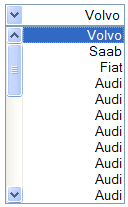
Note that not only the drop button is on the left-hand side, but the popup itself is layed
accordingly (scroll on left, everything aligned to the right). Having native acquaintance
with RTL environment, i can most certainly confirm that this is how it should look like.
Now, let's see Metal and Windows core Swing LAFs:
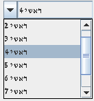
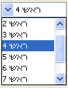
Here, we have three major problems that are propagated to almost all third-party LAFs as well:
- The selected value is not right-aligned and is instead very close to the drop arrow button.
- The scroll bar on popup is on the right side and not under the drop arrow button.
- The popup values are not right-aligned
The overall impression is that of a complete disaster (and i'm not exaggerating).
What about third-party LAFs? JGoodies Looks was the clear winner in RTL menus, but this
time Substance comes on top (after significant code fixes:). So, the first place is Substance:
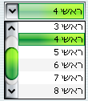
The second place belongs to Synthetica (commercial), JGoodies Looks, Squareness and
Pagosoft (with the nice touch of flipping the arrow orientation on popup activation).
All of them inherit Swing problems with renderer alignment and scrollbar placement:
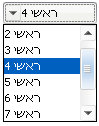
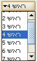
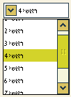
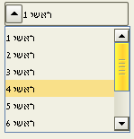
The third place goes to Liquid and Tiny with the additional problem of the location
of drop arrow button:
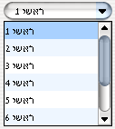
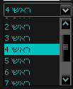
The fourth place goes to Napkin with the additional problem of missing glyphs and no
visual mark of currently selected (rollover) item:
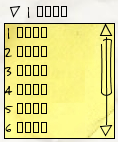
The fifth place goes to Office (ClassCastException on NetBeans color selection combobox
with custom cell renderer), Trendy (commercial, the same ClassCastException) and Metouia
(NullPointerException).
In addition to this RTL problem in core Swing classes, i have also found two other problems:
- Scroll buttons on wrapped tabbed pane are not shown at all (with the exact fix) got
internal number 673417 on March 19.
- System menu not correctly aligned got internal number 673418 on March 19.
Needless to say that both are yet to appear on bugparade. And if you're about to say
"Contribute to Mustang, that's why we have the process" - sorry, don't have the time to invest in this.